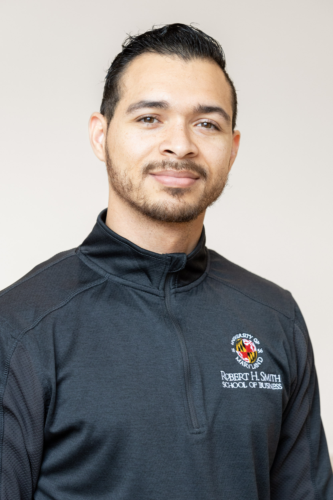

Operations Coordinator | Aspiring IT & Security Operations Specialist

I manage daily admissions and coordinate event logistics to support the recruitment funnel. I provide consultative guidance to prospective students, advising them on program fit and recommending clear next steps to advance their candidacy. My focus ensures both current and prospective students recieve exceptional service throughout their academic journey.
In this role, I conducted comprehensive research on congressional committees, district cities, and local leaders to actively maintain databases for grassroots advocacy campaigns. I authored content for digital publications and websites while attending key legislative hearings, briefings, and strategic coalition meetings to support federal advocacy efforts. Additionally, I ensured smooth day-to-day operations by providing vital administrative support to the policy team.
I connected diverse community members with essential material and resources while actively supporting the systems diversity, equity, and inclusion values. I assisted with library programming, curated high-demand displays, and maintained the collection to ensure an accessible and welcoming environment.
I researched and organized archival materials to support a documentary film, focusing closely on individuals involved in Black and LatinX empowerment movements.I also managed the rights clearance process by securing permissions and licensing for various media materials used in the project.